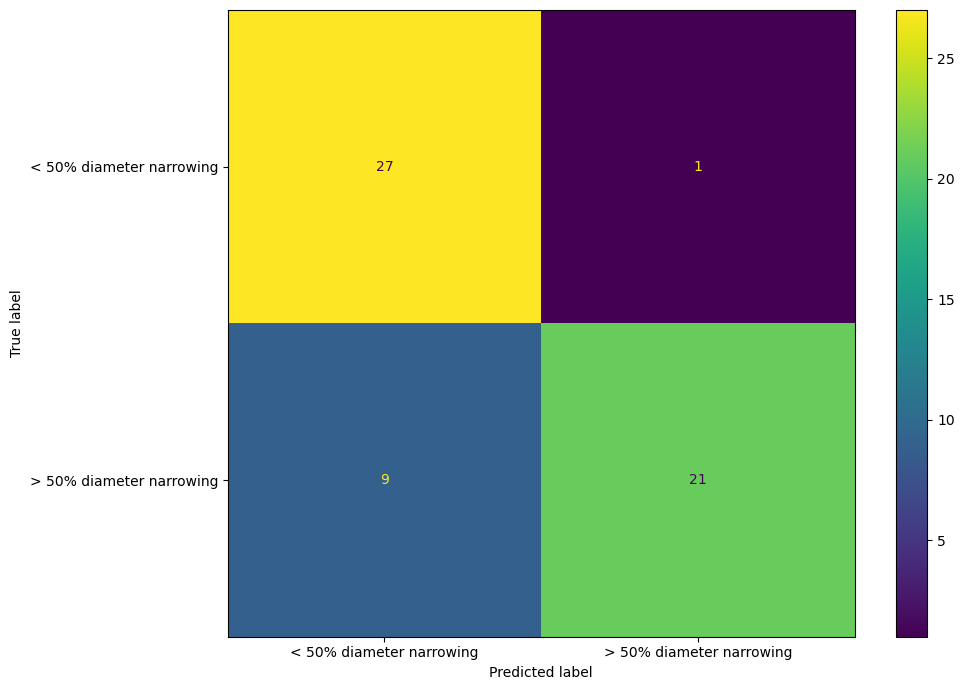

| Age (in years) | Sex | Chest pain type | Resting blood pressure (in mm Hg on admission to the hospital) | Serum cholesterol (in mg/dl) | Fasting blood sugar > 120 mg/dl | Resting electrocardiographic results | Maximum heart rate achieved | Exercise-induced angina | ST depression induced by exercise relative to rest | Slope of the peak exercise ST segment | Number of major vessels (0–3) colored by fluoroscopy | Thalassemia | Diagnosis of heart disease |
|---|---|---|---|---|---|---|---|---|---|---|---|---|---|
| 44 | female | non-anginal pain | 118 | 242 | False | normal | 149 | no | 0.3 | flat | 1 | normal | < 50% diameter narrowing |
| 45 | female | atypical angina | 112 | 160 | False | normal | 138 | no | 0 | flat | 0 | normal | < 50% diameter narrowing |
| 62 | male | non-anginal pain | 130 | 231 | False | normal | 146 | no | 1.8 | flat | 3 | reversable defect | < 50% diameter narrowing |
| 53 | male | non-anginal pain | 130 | 246 | True | showing probable or definite left ventricular hypertrophy by Estes’ criteria | 173 | no | 0 | upsloping | 3 | normal | < 50% diameter narrowing |
| 41 | male | atypical angina | 135 | 203 | False | normal | 132 | no | 0 | flat | 0 | fixed defect | < 50% diameter narrowing |
Creating Machine learning Model to Predict Presence of Coronary Artery Disease
1. SUMMARY
The following document covers a machine learning model analysis with a goal to predict angiographic coronary disease in patients. Data is pulled from patients undergoing angiography at the Cleveland Clinic in Ohio. This analysis is composed of Exploratory Data Analysis, testing of various machine models on a training data set, model optimization via hyperparameter, and final model performance analysis. The final model analysis shows that the model performs well but there can be further improvements before deployment for commercial use.
2. INTRODUCTION
Heart disease is the leading cause of death worldwide. Treating these heart diseases depends on capability of detecting symptoms and diagnosing cases earlier. One complication to diagnosing heart diseases is that many cases are found to be aymptomatic (Master 1969). This creates an opportunity for application of machine learning methods, where the following question can be asked: Given various details about a clients medical status, can we create a statistical model to accurately predict whether the patient has the disease? The goal of the following analysis is to create a model that can anwswer this question. To be best suited to the problem, the model should retain a high accuracy while minimizing the number of false negatives (ie predicting that a patient does not have the heart disease when the patient in fact does).
In particular, this analysis focuses on detection of angiographic coronary disease. The data set used in creating our model was taken from 303 patients undergoing angiography Cleveland Clinic in Cleveland, Ohio (Janosi and Detrano 1989). From this procedure, a set of parameters were collected about each patients, and a diagnosis of whether the patient had the angiographic coronary disease (signified by a diameter narrowing of the coronary artery by at least 50%). This is to serve as the target variable in our analysis
The set of parameters collected during the procedure, used as our features for model training, are as follows:
- Age (in years) : Age of patient (years)
- Sex : Sex of patient (male or female)
- Chest pain type: categorical feature describing the type of pain experienced by the patient
- Resting Blood Pressure: numeric feature giving patients resting blood pressure
- Serum Cholesterol : numneric feature giving the patients Serum cholesterol in mg/dl
- Fasting blood sugar > 120 mg/dl : binary feature indicating whether the patients Blood sugar level while fasting exceeded 120 mg/dl
- Resting electrocardiographic results: categorical feature reporting patients ECG results
- Maximum heart rate achieved: numeric feature giving maximum heart rate achieved by patent
- Exercise-induced angina: binary feature indicating whether patient underwent exercise induced angina
- ST depression induced by exercise relative to rest: numeric feature indicating the ST depression induced by exercise relative to rest
- Slope of the peak exercise ST segment
- Thalassemia : categorical feature indicating if patient suffered from Thalassemia
The following sections will discuss the decisions made and results in our Exploratory Data analysis, Machine learning model training, and final model performance
This report also drew information from the study done by (O’Flaherty et al. 2008) and (Athanasios Aessopos 2007)
3. DATA VALIDATION & CLEANING
From an initial preview of the data, some issues were corrected immediately, before performing formal data validation. This includes removing invalid target values (i.e. values outside of range) and converting the values to their semantic meaning. The output of the data cleaning can be seen in Table 1 below.
Next, we evaluated whether the features in the train and test dataset are distributed similarly using deepchecks. The check concluded that that the features were not distributed significantly and our distributions are as expected.
4. METHOD
The following section outlines the steps taken in manipulating our data and creating our model.
EDA is first conducted to obtain an idea of feature importance and to establish any important correlations to watch for. Machine learning analysis is then performed, where multiple models are tested and their performance compared. The best performing model is selected to proceed with. On this model, hyperparameter optimization is completed via random search to tune our model and obtain best results. Finally, the model is trained and tested on a separate data set, and evaluated for performance.
4.1 EDA
In this section, preliminary analysis is conducted to obtain an idea of possible correlations between features to be on the look out for. The results are presented below.
From Figure 1 above, we can see that there is some class imbalance in the target (diagnosis of heart disease). This means we will need to consider balanced scoring metrics and models.

Figure 2 provides insights on some potential useful features for prediction. For example, it appears that patients testing negative for heart disease can achieve a higher maximum heart rate.
Finally, in Figure 3, we can see that there are correlations in some variables.
4.2 ML-Analysis
The following section outlines the procedure taken in creating our model and testing it on our data set. As this is a classification problem (predict whether the patient has the disease or not), the chosen models for testing in this analyis are a Logistic Regression model and a Suport Vector Classifier. These two models were selected as they have been shown to historically perform well on real world data sets.
Since this data set is somewhat imbalanced, the primary scoring metric to evaluate these models will be F1 score, though model accuracy is still taken into consideration. Due to the nature of the analysis, special attention is taken to minimize false negatives as they represent the most damaging type of error (predicting that a patient is free of the disease when he does in fact have it). To this effect, we look to maximize Recall.
The framework upon which this analysis is based has been adapted from DSCI573 Lab1.
4.2.1. Data Preprocessing
Features are sorted by type, and a column transformer object is created. On categorical columns, simple imputing is applied filling missing values with the most frequently occuring value. One hot encoding is then performed.
For numerical feature, standard scaling is applied to keep all features within the same range
4.2.2. model creation
Basic models (default hyperparameter values) are now generated. A dummy model is first created to use as a baseline to use for comparison. Then, a logistic regressor and support vector classifier model is created. 5-fold cross validation (CV) is performed on each model and scores are returned.
As discussed above, F1 score is to be the primary metric to evaluate model performance, with accuracy and recall as secondary metrics. This is reflected in the scoring metrics used in CV
Finally, a Confusion matrix was generated for each model to give an idea of false positive vs false negative rate.
4.2.3. Balanced model testing
Step 4.2.2 is repeated, this time creating balanced logistic regressor and SVC models, with all other hyperparameters held the same. Confusion matrices were once again generated to evaluate the types of errors seen. The goal of this step is to gain an understanding of how much accuracy is sacrificed at the benefit of improving F1 score.
4.2.4. Model Evaluation and Selection
With baseline models created, they are evaluated according to the criteria set above. CV scores of each model are presented below. First, standard deviation was evaluated to verify there are no abnormally performing models. Scores are presented in Table 2 below.
Comparing the metrics across models, Balanced logistic regression yields the highest recall and f1_score. For these reasons, we choose to proceed with LogisticRegression(class_weight="balanced").
| index | dummy | logreg | svc | logreg_bal | svc_bal |
|---|---|---|---|---|---|
| fit_time | 0.001 | 0.008 | 0.007 | 0.007 | 0.006 |
| score_time | 0.003 | 0.005 | 0.005 | 0.005 | 0.005 |
| test_accuracy | 0.582 | 0.855 | 0.832 | 0.847 | 0.832 |
| train_accuracy | 0.582 | 0.876 | 0.91 | 0.869 | 0.92 |
| test_precision | 0 | 0.869 | 0.858 | 0.816 | 0.813 |
| train_precision | 0 | 0.899 | 0.945 | 0.858 | 0.923 |
| test_recall | 0 | 0.771 | 0.726 | 0.825 | 0.78 |
| train_recall | 0 | 0.794 | 0.833 | 0.821 | 0.881 |
| test_f1 | 0 | 0.816 | 0.783 | 0.818 | 0.795 |
| train_f1 | 0 | 0.843 | 0.885 | 0.839 | 0.901 |
4.2.5. Hyperparameter optimization
With our final model selected, hyperparameter tuning was done via a random search methodology to find the best value for our C hyperparameter, optimizing for F1 score. The cross-validation scores among the top three models are approximately equivalent. This suggests that the model’s performance is relatively stable across the parameter space, indicating that further tuning may not yield substantial improvements. With this C value selected, we proceed to evaluate the final model.
4.2.6. Final model Scoring and Evaluation
With hyperparameters selected the best model is fitted on the training set, then scored on both data sets. F1 score, Recall score and Accuracy are all computed across both data sets.

| Metric | Train | Test |
|---|---|---|
| F1 Score | 0.836 | 0.811 |
| Recall | 0.817 | 0.882 |
| Accuracy | 0.866 | 0.759 |
5. RESULTS & DISCUSSION
The model created shows great promise and with a few additional checks and improvements could be ready for deployment.
Our final test results yielded a F1 score of 0.811 and there is a large discrepancy to the training F1 score (0.836). This indicates that the model is overfitting. It is important to note that the test dataset is small with only 29 observations.
Furthermore, our model has an accuracy of 75.9 percent. This value is better than the baseline dummy accuracy, but should be higher to avoid false negatives (which can be very damaging) or false positives (which can be costly to physicians).
With hyper parameter tuning the model achieved a higher F1 score compared to original model (0.836 on train F1 score compared to 0.818 F1 score for base model cv score).
To get more rigorous performance testing and confidence in our result in future iterations, there are several improvements we can make. It is recommended to seek further data, test more model types, and conduct feature engineering.
6. CONCLUSION
The model created showed a lot of promise, being able to correctly classify presence of angiographic coronary disease with an accuracy of 75.9 percent.
The model performed fairly well on F1 score and was able to somewhat minimize the number of false negatives classified (recall of 0.882).
There are some limitations to this report that should be noted both at the analysis level and application level.
On the analysis side, only 2 models were tested. While their performance was encouraging, a more rigorous approach would test a variety of classifiers before proceeding with logistic regression.
As well, further hyperparameter optimization could be conducted. While a wide range of C-values were tested, Only 50 possible values were tested from this range. An improvement to this would be to randomly sample from a log-uniform distribution to obtain our best C value.
Lastly and perhaps most importantly, there is a large discrepancy between our test data set relative to the training data. The most reasonable explanation for this would be an test set too small to be representative.
On the application side, we should note that this model was tested specifically for one type of heart disease. The scope of the data used in training should be taken into account before proceeding with prediction on new data. As well this model requires a significant amount of medical information about a patient in order to create a prediction. Most of the information used to create the features to train the model is obtained through angiography, a process which itself ends in a diagnosis of the disease. So it is worth noting that even a high performing model will not be immediately applicable, though it gives confidence on the process.
Overall, we recommend further pursuing optimization of this model. Due to the high discrepancy between training and testing scores, we would strongly recommend performing further testing on the model on new, larger data sets before proceeding with it.
7. REFERENCES
Athanasios Aessopos, Dimitrios Farmakis, Maria Kati. 2007. “Heart Disease in Thalassemia Intermedia: A Review of the Underlying Pathophysiology.” https://haematologica.org/article/view/4438.
Janosi, Steinbrunn, Andras, and Robert Detrano. 1989. “Heart Disease.” UCI Machine Learning Repository.
Master, Arthur M. 1969. “The Extent of Completely Asymptomatic Coronary Artery Disease.” https://doi.org/10.1016/0002-9149(69)90064-2.
O’Flaherty, M, E Ford, Steven Allender, P Scarborough, and S Capewell. 2008. “Coronary heart disease trends in England and Wales from 1984 to 2004 : concealed levelling of mortality rates among young adults,” January. https://dro.deakin.edu.au/articles/journal_contribution/Coronary_heart_disease_trends_in_England_and_Wales_from_1984_to_2004_concealed_levelling_of_mortality_rates_among_young_adults/21047827.